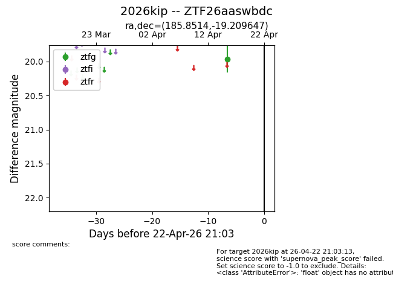
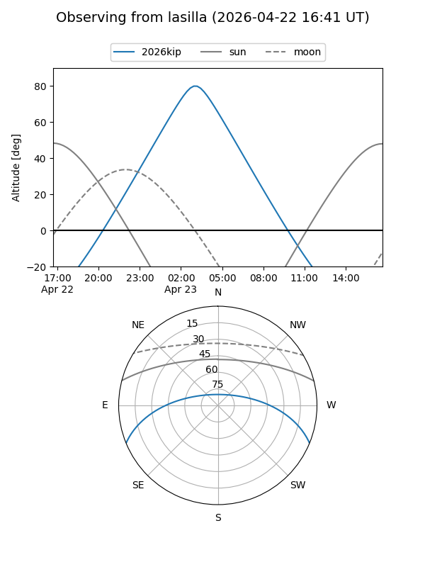
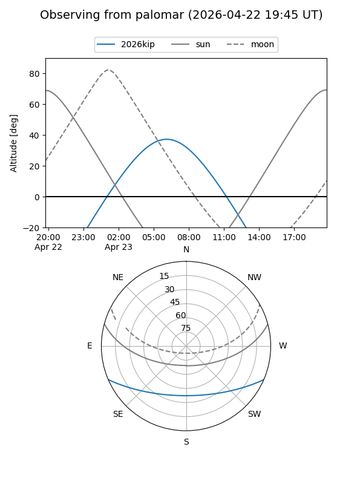

2026kip
Target 2026kip at 2026-04-22 21:04
Aliases and brokers:
FINK: link
Lasair: link
ALeRCE: link
TNS: link
YSE: link
alt names
ZTF26aaswbdc (ztf,fink_ztf)
2026kip (tns,yse)
Coordinates:
equatorial (ra, dec) = 185.8514,-19.20965
equatorial (HMS+DMS) = 12:23:24.35,-19:12:34.73
galactic (l, b) = (293.8430,+43.16685)
Flags:
Photometry:
last ztfg=19.96
1 ztfg detections
Lightcurve

Visibility


Additional plots